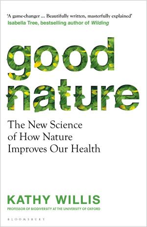

1.1 — Mobilità e Città
1.1.1 — L'euthymicrona del pendolare
→ Apri come pagina indipendente — bibliografia + nav dedicata
Ogni mattina, centinaia di milioni di persone si mettono in moto. Letteralmente. Il tragitto casa-lavoro è il rituale più universale della civiltà moderna, eppure lo eseguiamo quasi in trance, ottimizzando per un'unica variabile: il tempo. Google Maps calcola quella che potremmo chiamare la brachistocrona del pendolare — il percorso più veloce tra due punti, come la celebre curva della meccanica classica che minimizza il tempo di caduta di una sfera (🏎 ff.138.1 La strada più veloce). Da qualche anno, l'app offre anche i tragitti con meno emissioni. Ma nessun navigatore calcola il percorso che massimizza la felicità. Nessuno, tranne la scienza.
Gli orizzonti naturali possiedono una “dimensione frattale” che calma il sistema nervoso, e scuole immerse nel verde hanno effetti benefici sullo sviluppo cognitivo dei bambini. Eppure nessun navigatore calcola il percorso che massimizza la felicità.
Kathy Willis, professoressa di biodiversità a Oxford e autrice di Good Nature[1], ha mostrato che per migliorare il benessere quotidiano basta allungare leggermente il tragitto per attraversare parchi e viali alberati. Gli orizzonti naturali possiedono una “dimensione frattale” — la complessità geometrica di uno skyline di rami e foglie — che risulta calmante per il sistema nervoso: i nostri sensi prediligono spazi ampi con qualche albero qua e là, come nella savana da cui proveniamo evoluzionisticamente. Scuole immerse nel verde hanno effetti benefici sullo sviluppo cognitivo dei bambini[2]. ChatGPT, quando gli si chiede un nome per questo percorso ottimizzato per il benessere, conia euthymìcrona (εὐθυμος + χρόνος): il tempo del buon animo. Una parola che dovrebbe esistere in ogni lingua (😊 ff.138.2 La strada più felice).
“Se le persone avessero un'app che suggerisce il percorso più felice anziché il più veloce, scegliere di passare da un parco invece che da un'arteria stradale avrebbe effetti misurabili sulla salute mentale di intere città.”
— Kathy Willis, Good Nature

Il parco di Willis lavora anche sotto la pelle. In Giappone Qing Li e i colleghi avevano già visto che una gita nel bosco alza l’attività delle cellule natural killer, le sentinelle del sistema immunitario, per più di sette giorni. Per capire quale parte del bosco funzionasse lo hanno portato in albergo: dodici uomini fra i 37 e i 60 anni hanno dormito tre notti in una camera di città dove un umidificatore diffondeva l’olio essenziale di hinoki, il cipresso giapponese. Nell’aria c’erano alfa- e beta-pinene, e alla fine i fitoncidi avevano aumentato l’attività delle natural killer[29] e abbassato adrenalina e noradrenalina nelle urine. La medicina giapponese, del resto, annovera fra le cure lo shinrin-yoku, il bagno nel bosco (💚 ff.51.1 L’affabulazione per il verde). Il tragitto è anche uno dei pochi movimenti che la giornata chiede ancora: secondo David Sinclair, che ne scrive in una rassegna su Cell Metabolism, oggi facciamo cinque volte meno esercizio di cent’anni fa[30], e i nostri stili di vita accelerano l’invecchiamento.
Questo sposta il tema dalla mobilità alla progettazione quotidiana: oltre a dove andiamo, conta come ci arriviamo. La traiettoria è coerente: prima ridurre l’attrito per chi cammina e pedala (🚦 ff.34.3 Ripensare le città: spazi vivibili), poi rendere visibile il costo reale degli spostamenti. La città funziona come una tecnologia comportamentale.
Il percorso si può anche scegliere per gioco. Ben Ashforth ha cercato su OpenStreetMap una via intitolata a ciascun giorno dell’anno, ha lasciato a un algoritmo il compito di metterle in fila e poi il viaggio l’ha fatto davvero[31], con una fotografia per ogni data, raccontato in un intervento lampo di cinque minuti. A New York Yufeng Zhao ha costruito un motore di ricerca per le parole scritte in strada[32]: all text in nyc legge con il riconoscimento ottico dei caratteri le immagini di Google Street View dal 2007 al 2024, in tutti e cinque i distretti, e trova il testo di insegne, graffiti, pubblicità e cartelli delle proteste. Si cerca una parola, «love» per esempio, e la città restituisce i punti in cui compare; ogni ricerca, scrive l’autore, crea un percorso non pianificato. È l’avventura che manca a chi sa già, prima di partire, che strada farà e quanto ci metterà (🧭 ff.154.3 Dov’è finita l’avventura?).
Qualunque strada si scelga, la distanza cambia poco. Nel progetto Potato il Senseable City Lab del MIT ha seguito con i dati di localizzazione dei telefoni 50 milioni di persone in 234 città cinesi, e ha trovato che la distanza casa-lavoro non dipende dalla grandezza della città[33]: in media circa cinque miglia, anche fra città con cento volte gli abitanti di un’altra. Shanghai ha dieci volte la popolazione di Daqing, e i suoi pendolari percorrono in media 8,82 chilometri, contro 8,64. Il tempo i dati non lo dicono, perché manca il mezzo di trasporto, e gli autori ammettono che nelle città grandi e congestionate lo stesso tragitto può durare di più. Allontanandosi dal centro, poi, la distanza disegna una U rovesciata: oltre i 6-9 miglia chi abita in periferia trova lavoro in un sottocentro più vicino. È il vincolo che Cesare Marchetti misurava in tempo, un’ora per viaggio dall’antica Roma a oggi (🧱 ff.5.5 Il muro di Marchetti).
A Parigi, delle 13,8 MT di CO₂ annue legate alla mobilità, più del 10% si potrebbe evitare eliminando le code. Ad Amsterdam le emissioni sono 10 volte meno, perché vanno tutti in bici. La città funziona come una tecnologia comportamentale.
Per scegliere la traiettoria conta anche il mezzo. Dalla poltrona di casa al sedile dell’auto, poi a quello di un aereo: si pensa di viaggiare e si resta sempre su una poltrona (🪑 ff.154.1 Viaggiare, fermi). La bicicletta lo spazio lo attraversa, anche quando è freddo e piovoso, e al ritorno pure la poltrona di casa sembra aver fatto il viaggio: più calda e asciutta, e più comoda di una sella (🚲 ff.154.2 Viaggiare (?) in bicicletta). Fra gli utenti Gen Z di Strava, quelli che vanno al lavoro in bici sono raddoppiati in un anno (🟠 ff.86.3 Report Strava 2023).
Nell’ottobre 2025, per i suoi 180 anni, Scientific American ha aggiornato un grafico uscito sulla rivista nel 1973: in bicicletta l’uomo diventa uno dei viaggiatori terrestri più efficienti[23]. L’asse verticale misura il costo del trasporto, cioè le calorie spese per portare un grammo di corpo per un chilometro. L’asse orizzontale è il peso, in scala logaritmica. Un topo spende circa 50 calorie per grammo e chilometro. Un uomo a piedi ne spende circa 0,7. Il numero torna con la maratona in cinque ore di un uomo di 75 chili, che brucia 2.100 kcal in 42 km (👨⚕️ ff.57.2 Il consiglio del medico). In bicicletta il costo scende intorno a 0,14, circa un quinto di quello a piedi. Sul grafico il ciclista sta sotto il cavallo, l’automobile e il salmone.
Spostarsi costa due volte: si lotta contro la gravità e ci si spinge in avanti. Chi cammina paga entrambe le voci, prima per stare in piedi e poi a ogni passo. Le gambe lunghe rendono di più per ogni passo, e per questo il topo è fra i più costosi. Chi vola plana sulle correnti. Chi nuota scivola nell’acqua, e il galleggiamento lo sostiene. Ruote e cuscinetti rotolano con poco attrito e lasciano avanzare per inerzia senza pedalare, mentre il telaio regge il peso di chi siede. Secondo Tyson Hedrick, fisiologo comparato alla University of North Carolina, la bicicletta rende lo stare a terra più simile al nuotare. Il limite è la sagoma: il ciclista non è affusolato come un tonno rosso e paga più resistenza dell’aria. Con una carenatura aerodinamica, il velomobile, il costo scende ancora, secondo i calcoli dello stesso Hedrick.
Il grafico va letto con tre cautele. Non contiene misure nuove: quasi tutti i dati vengono da un articolo di Vance Tucker del 1970, il punto della bicicletta dal grafico del 1973. Il punto del velomobile viene da un calcolo. I valori citati qui sono letti a occhio su una scala logaritmica e valgono come ordini di grandezza. Un chilometro in bici costa poco, e il corpo ha comunque bisogno di spendere: per ridurre la mortalità servono almeno 15–30 ore-MET di attività a settimana (💀 ff.86.1 Se non ti muovi, muori).
Un chilometro in bicicletta costa poco al corpo, ma chi pedala guarda anche un altro costo: il rischio di farsi male. Al Politecnico di Milano, nell’Antifragility Lab del centro CRAFT (Dipartimento di Architettura e Studi Urbani), c’è un progetto dal titolo senza giri di parole: un atlante italiano dei morti e dei feriti gravi in bicicletta[27]. Lo coordina l’urbanista Paolo Bozzuto. La premessa sta nella pagina del progetto: la percezione diffusa che pedalare sulle strade italiane sia rischioso, e la poca voglia di prendere la bici che ne segue, è uno dei principali fattori critici per lo sviluppo della mobilità attiva. Per chi cade, l’incidente resta una storia privata, come i trenta giorni di divano dopo una caduta provocata da altri (🦴 ff.124.1 Dalì sciogli clavicole).
Il gruppo parte invece dai microdati ISTAT sugli incidenti stradali con lesioni, che escono circa quindici mesi dopo la fine dell’anno: quelli del 2022 sono arrivati a luglio 2024. Ne estrae i soli incidenti con ciclisti e li segue comune per comune. A settembre 2025 ha pubblicato cinque dashboard sul decennio 2014–2023, in versione beta; la mappa con la posizione di ogni incidente copre solo il 2022 e il 2023, gli unici anni che ISTAT ha rilasciato con le coordinate.
Il primo affondo regionale è un report del febbraio 2025 preparato per Legambiente Umbria. Fra il 2014 e il 2022 in Umbria gli incidenti con ciclisti sono stati 1.232, fra 131 e 145 all’anno, senza una tendenza. Nel 2020 la mobilità complessiva è calata per la pandemia, e gli incidenti in bici sono rimasti 136: la loro quota sul totale degli incidenti stradali ha toccato l’8%, il massimo della serie. Gli autori ipotizzano che in quei mesi molte persone abbiano cominciato a usare di più la bicicletta. Su Strava l’onda si vede ancora nel 2021, con il 38% di attività in più rispetto al 2020 (🏃 ff.17.2 Il report del 2021 di Strava). In Italia la stessa quota sta ogni anno sopra quella umbra, fra il 9,4 e l’11,4%. Quanto ai luoghi, 459 incidenti sono avvenuti su un rettilineo, 373 a un incrocio, 131 in una rotatoria. I ciclisti morti in nove anni sono 17: sette sui rettilinei, quattro agli incroci, tre in curva.
Due avvertenze. Il report conta gli incidenti e non i chilometri pedalati su ciascun tipo di strada, quindi non dice dove il rischio per chilometro sia più alto. E i dati ISTAT comprendono solo gli incidenti rilevati e registrati da pubblici ufficiali: secondo il gruppo di ricerca quelli reali sono ragionevolmente di più, perché molti non vengono rilevati per la scarsa gravità del danno o per la reticenza di chi li subisce. Le strade bianche alpine vicino a Cuneo, con zero macchine e molta natura, sono un paradiso che si va a cercare apposta (🚧 ff.154.4 La mia piccola avventura). Per quelle di tutti i giorni, le dashboard dichiarano lo scopo: ragionare su cause e circostanze degli incidenti, e sugli interventi prioritari per ridurli.
1.1.2 — La città a 15 minuti
→ Apri come pagina indipendente — bibliografia + nav dedicata
Ma la felicità del tragitto è solo l'inizio. La vera rivoluzione è ripensare le città stesse. Negli ultimi decenni, urbanisti come Jan Gehl e Carlos Moreno hanno proposto un modello radicale: la città a 15 minuti, in cui ogni servizio essenziale — scuola, medico, alimentari, parco, lavoro — sia raggiungibile a piedi o in bicicletta in un quarto d'ora. A Parigi, delle 13,8 MT di CO₂ annue legate alla mobilità, più del 10% si potrebbe evitare eliminando le code — magari con flessibilità di orari o smartworking. Ad Amsterdam le emissioni sono 10 volte meno, perché vanno tutti in bici. E i Paesi Bassi dimostrano che si può invertire rotta: negli anni ’70 erano convinti sostenitori delle automobili e avevano trasformato canali di 900 anni in strade; poi una serie di progetti ha dis-incentivato fortemente l’auto e ridato spazio a verde e canali — un caso di scuola che il corpus racconta nei numeri di traffico (🚦 ff.34.2 Mobilità e traffico) e nella riconquista degli spazi vivibili (🚦 ff.34.3 Spazi vivibili). La pandemia ha accelerato un trend già in atto: nelle Filippine la bici è l’unico mezzo ad aver visto un incremento netto di utenti secondo un sondaggio della Banca Mondiale[3]. In Italia ogni cittadino dispone di 21,1 metri di pista ciclabile pro capite (erano 13 nel 2008). Milano ha approvato un piano da 240 milioni di euro per 750 km di piste[4], obiettivo 20% di spostamenti in bici entro il 2035. Parigi va ancora oltre: città 100% ciclabile entro quattro anni[5] (🚲 ff.20.1 La rivincita delle biciclette).
Il quarto d’ora di Moreno ha però un’unità di misura implicita: il passo. Cambiare il mezzo cambia la mappa, e Bergamo è un buon banco di prova perché è abbastanza piccola da sembrare già compatta e abbastanza densa da non esserlo. Misurata sulle isocrone in bicicletta a partire da Porta Nuova, la città a quindici minuti si allarga fino a diventare provincia[22]: in venti minuti si abbraccia l’intera cintura interurbana, in mezz’ora si arriva a Villa d’Almè, Nembro, Brusaporto, Zanica, Dalmine e Presezzo. Dentro quella mezz’ora di pedalata risiedono quasi 400 mila persone, poco meno di un terzo della popolazione provinciale. La prossimità, insomma, dipende dal veicolo con cui si attraversa il territorio.
Il confronto con l’auto è meno impari di quanto dica il senso comune. Nella metà dei casi in bicicletta si “perdono” circa 4-6 minuti rispetto all’auto, con l’e-bike solamente 2-3; sui percorsi di cinque chilometri la bici muscolare impiega circa cinque minuti in più, e solo sui dieci chilometri il ritardo accumulato arriva a una decina di minuti. Sono margini che stanno dentro il rumore di fondo di un parcheggio cercato o di una coda a un semaforo. Decidere di misurare una città in minuti anziché in chilometri è già una scelta culturale, la stessa che ha trasformato il tempo in un nastro di contenitori da riempire (☑️ ff.44.1 La fallacia moderna del tempo a contenitori). E in Pianura Padana la scelta del mezzo pesa due volte, perché l’aria che si respira pedalando è la stessa che i dati sul particolato raccontano da anni (🔄 ff.87.3 Un purificatore d’aria per tutti).
Il corollario è che l’infrastruttura leggera può precedere quella pesante. Il guerrilla wayfinding nato nel 2007 a Raleigh, in North Carolina, con i cartelli abusivi di Matt Tomasulo, dimostrava che spesso alle persone non manca la distanza breve: manca l’informazione che sia breve. A Bergamo l’esperimento è stato replicato nel 2019, quando alcuni studenti universitari hanno individuato nove percorsi ciclabili e pedonali e affisso oltre ottanta cartelli. Un cartello costa quanto un caffè e sposta la percezione del raggio; una tangenziale costa quanto una manovra finanziaria e sposta il raggio nella direzione opposta. È la differenza tra una città che si riscrive per strati e una costruita in blocco intorno all’automobile, come le metropoli cresciute in quarant’anni sul modello dell’asfalto (🏮 ff.125.3 Cina: il prossimo impero mondiale?).
Un quarto d’ora a piedi, però, non pesa allo stesso modo a ogni latitudine. Lagos era la città con il tasso di crescita più veloce al mondo (🇳🇬 ff.13.2 La Nigeria esploderà?); Dubai è passata da 1,32 milioni di abitanti nel 2005 a 3,65 milioni nel 2023. La metropolitana ha 49 stazioni e ne prevede 197 per il 2030, ma già nel 2015 la città contava 540 veicoli ogni mille abitanti, più di Londra e di New York. La risposta dell’amministrazione è un piano per la «città a 20 minuti»: rendere le zone attorno alle fermate della metro raggiungibili a piedi o in bicicletta. Resta il clima. D’estate le massime medie superano spesso i 40 °C, e vicino al Golfo l’umidità sale oltre l’80%.
Il Senseable City Lab del MIT, con ricercatori di Singapore e di Sharjah e i fondi della Dubai Future Foundation, ha misurato quanto costa, in metri, scegliere l’ombra[26]. Attorno a quattro stazioni — Salah Al Din, Emirates Towers, Sobha e The Gardens — ha ripreso i marciapiedi con una camera panoramica ogni 2,5 metri, ha separato nelle immagini cielo, edifici e alberi e ha calcolato dove cade il sole il 21 marzo, il 21 giugno e il 21 dicembre, dalle 8 alle 17. Il percorso più breve verso circa trecento ingressi di edifici, entro un chilometro dalla stazione, lo trova l’algoritmo di Dijkstra: lo stesso problema di un labirinto risolto mostrando la strada (🛠️ ff.123.1 L’AI con il coltellino svizzero).
Poi si dà un peso all’ombra. Quella di un albero vale metà di quella di un edificio, secondo un esperimento sui pedoni di Singapore, e il suo valore cresce con la strada già fatta: in una simulazione termica, dopo circa 300 metri al sole la pelle si scalda più in fretta. In media il percorso più ombreggiato risulta più lungo solo dell’1,3%, con la quota di tragitto all’ombra degli edifici in crescita dell’8,9% e quella al sole in calo dell’8,8%. Nel conto entrano anche i centri commerciali: a Emirates Towers i passaggi interni sono il 10,8% della rete, e 16 percorsi brevi su 73 attraversano già un edificio.
I limiti li scrivono gli autori. Le preferenze dei pedoni vengono da Singapore, perché per Dubai non ci sono dati; le stazioni sono quattro, perché le immagini si raccolgono a mano; i percorsi interni su più piani non sono contati, e allargando l’analisi peseranno gli orari di apertura degli edifici. Anche l’ombra ha un costo: in un clima arido gli alberi chiedono molta manutenzione e alzano l’umidità, i grattacieli assorbono calore e lo rilasciano di notte. Gli usi proposti sono due: mostrare alle amministrazioni dove mancano alberi o coperture, e un’app che porti il pedone sul percorso più fresco. Prima di partire sappiamo già che strada faremo e quanto ci metteremo (🧭 ff.154.3 Dov’è finita l’avventura?); a quaranta gradi manca un dato, i metri da fare al sole. Il risultato regge anche cambiando i parametri, con una differenza fra i due percorsi che resta entro il 2,2%, ma gli autori avvertono che in altre città potrebbe non valere.
Anche il trasporto pubblico ha le sue ottimizzazioni controintuitive: una fermata ogni 200 metri ha un prezzo nascosto[34]. Negli Stati Uniti la distanza media fra due fermate è 313 metri, circa cinque per miglio, e a Philadelphia scende a 214, otto per miglio. Un autobus, scrive TransitCenter nella sua guida del 2019 per le aziende di trasporto, passa alle fermate il 20% del suo tempo[35]: a San Francisco l’agenzia SFMTA le ha portate da quasi 6 a 2,5 per miglio e la velocità dei bus è cresciuta del 4,4-14%, mentre a Portland allungare la distanza media di 90 piedi, circa 27 metri, su una delle linee più frequentate ha accorciato i tempi del 5,7%. Nei workshop di New York City Transit il 63% dei passeggeri del Bronx ha detto di preferire meno fermate. Chi abita accanto alla fermata, però, la sente sua, e la guida avverte che il progetto va condotto come una campagna, con la politica e la comunicazione dalla propria parte: ad Albuquerque, senza, la disinformazione ha fatto sospendere tutto.
Il treno ha il suo banco di prova in Giappone, dove passa per la ferrovia il 28% dei chilometri percorsi dai passeggeri, contro il 10% della Francia, il 6,4% della Germania e lo 0,25% degli Stati Uniti. JR East, la compagnia più grande, trasporta ogni anno quattro volte i passeggeri dell’intera rete ferroviaria britannica[36], con meno chilometri di binari, circa dieci milioni di abitanti serviti in meno e otto concorrenti. Le ferrovie giapponesi chiudono in utile operativo e ricevono molti meno sussidi di quelle europee e americane. All’auto resta poco spazio: secondo l’urbanista Donald Shoup il centro di Tokyo ha 23 posti auto per ettaro, Los Angeles 263, e perfino Manhattan, la zona più densa del Nord America, circa 60.
I conti tornano anche per un’altra ragione. Per le compagnie private storiche il treno è in utile ma porta di solito la quota più grande dei ricavi, o poco più della metà; il resto arriva dagli affari laterali. Con Tokyu, nel sud di Tokyo, si prende il treno e l’autobus, si abita in una casa costruita da Tokyu, si lavora in un suo ufficio, ci si cura in un suo ospedale, si fa la spesa nel suo supermercato e si finisce in una sua casa di riposo. Il valore che una ferrovia crea a destinazione, che col biglietto non si può incassare, la compagnia lo recupera perché quelle cose le possiede[36].
Ma la bici non è l’unica protagonista della micromobilità. L’80% degli spostamenti negli Stati Uniti ha una lunghezza inferiore ai 16 km — un dato che segue, neanche a dirlo, la distribuzione di Pareto: pochissimi tragitti sono lunghi, la stragrande maggioranza è breve. La conseguenza logica è che oltre alla guida autonoma e a nuove motorizzazioni serve finanziare i mezzi più adatti a questi spostamenti brevi: e-bikes, monopattini e scooter elettrici. Horace Dediu, nel suo The 10 Micromobility Commandments, articola una visione in cui il futuro della mobilità urbana è un veicolo più piccolo: leggero, elettrico, condivisibile. Se la città a 15 minuti ridisegna lo spazio, la micromobilità ridisegna il veicolo — e lo fa partendo dalla fisica: per spostare 80 kg di persona non servono 2.000 kg di auto. Il paradosso è che l’infrastruttura più costosa delle nostre città — strade larghe, parcheggi multipiano, tangenziali — è progettata per il caso più raro: il viaggio lungo. Mentre il caso più comune, il tragitto breve, non ha quasi infrastruttura dedicata. Come per le rinnovabili (🌬 ff.11.1 La rivincita delle rinnovabili?), la soluzione più efficiente è spesso quella più semplice — basta smettere di sovradimensionare (🛴 ff.1.3 Gli scooter elettrici ci salveranno?).
Una città a 15 minuti va governata, e per governarla bisogna misurarla — ma le città sono già coperte di occhi. Il Senseable City Lab del MIT ha pubblicato su Nature Sustainability un metodo che promuove le telecamere del traffico a rete di sensori ambientali: 331 telecamere di Manhattan bastano a stimare le emissioni dell’intera isola[21], incrociando i fotogrammi con i dati di localizzazione dei cellulari, aggregati e anonimizzati. Il classificatore distingue 12 tipi di veicolo con il 92,9% di accuratezza media, senza leggere una targa, e i volumi che ne escono correlano a 0,93 con i contatori automatici della città. Dai video si ricava perfino la fasatura dei semafori, con un errore medio di 2-5 secondi.
La parte interessante è quanto sbagliano i modelli che quel dettaglio non ce l’hanno. Ignorare i semafori sottostima il PM2,5 del 49%, e negli Stati Uniti ne operano oltre 330.000: l’errore si moltiplica per una nazione. Rimuovendo tutta l’informazione ricavata dalle telecamere la sottostima arriva al 31,96% per la CO₂ e al 44,72% per il PM2,5. L’alta risoluzione fa emergere anche quello che le medie appiattiscono: le strade di scorrimento sono il 16,40% della rete e il 30,74% della CO₂, mentre su ponti e tunnel le densità di emissione stanno tra il 319% e il 513% sopra la media di rete. Vale il vecchio principio per cui senza misura non c’è conoscenza (⚖️ ff.61.1 Misurare l’inquinamento in ore di vita), applicato però alla scala dell’isolato invece che a quella del bilancio nazionale: passare dal dire che l’aria di Milano è migliorata al sapere in quale via non lo è (🏭 ff.87.2 Quanto è inquinata l’aria in Italia?).
Il banco di prova è il pedaggio di congestione entrato in vigore a Manhattan il 5 gennaio 2025, il primo negli Stati Uniti. Otto settimane dopo il framework misura un traffico calato del 10% e le emissioni giù del 16-22% a seconda dell’inquinante, con le auto private a -10,34%, i camion a -13,76% e la velocità media in aumento del 12,18%. È il punto in cui il metodo si paga da solo: gli inventari ufficiali sono compilati per totali annui a scala di città, e un numero così non lo producono in tempo utile per difendere il provvedimento mentre viene attaccato. Sullo stesso inventario nazionale EPA del 2020, per dire, questa stima risulta più alta del 36,35% sulla CO₂ e del 48,46% sul PM2,5. Resta la domanda scomoda, che gli autori disinnescano solo in parte dichiarando di non aver mai unito i dataset a livello individuale né tentato la re-identificazione: l’infrastruttura che misura l’aria è la stessa che guarda le persone. Il corpus ci era già passato notando che pochi pixel bastano tanto a riconoscere un volto quanto a stimare l’inquinamento con una fotocamera da 1 MB (🦪ff.84.4 Molluschi e altri sensori), e che costruire un modello del mondo serve soprattutto a capire quello vero (📐 ff.132.3 Misurare e modellare il mondo). Qui il modello e il mondo guardano attraverso le stesse lenti.
Cento giorni dopo l’avvio i numeri arrivano anche dalla strada. Secondo i dati raccolti dalla Congestion Pricing Now Coalition e riportati da Christopher Bonanos su Curbed, nell’ora di punta il tunnel Holland ha il 65% di ritardi in meno e lo si attraversa nel 48% del tempo in meno[37]; in quei cento giorni nella parte bassa di Manhattan sono entrate 6 milioni di auto in meno dell’anno prima, 80.000 al giorno a marzo, e nella zona del pedaggio i feriti per incidenti stradali si sono dimezzati. Il dato preferito di Juliette Michaelson, ai vertici della MTA: a gennaio e febbraio le segnalazioni al 311 per i clacson sono calate del 70%. I treni dei pendolari si riempiono, con Metro-North passata da 5 a 5,3 milioni di passeggeri in gennaio, anche se il confronto con l’anno prima contiene ancora il rientro negli uffici, e Bonanos lo scrive.
New York è anche la meta di chi lavora nella tecnologia e cambia città. Fra il 2019 e il 2023, secondo i dati del fondo SignalFire riportati da Axios, ha attirato un lavoratore tech su sette fra quelli che si sono trasferiti[38], ma per lo più si tratta di chi lavora da remoto e si sposta lontano dall’azienda. La baia di San Francisco resta in testa, con 730.000 posti nella tecnologia, uno su quattro, e il 35% degli specialisti americani di AI. Oltre alla grandezza conta la rete. Xiao-Fan Liang, César Hidalgo e i coautori hanno mappato le reti fra città di Stati Uniti e Cina e trovato che la posizione di una città nelle reti di comunicazione, mobilità e collaborazione scientifica spiega i brevetti meglio della sola popolazione[6], soprattutto per le tecnologie più recenti. In Cina l’effetto regge anche a parità di PIL e istruzione, negli Stati Uniti no: lì pesa di più la collaborazione scientifica.
1.1.3 — Ruote autonome
→ Apri come pagina indipendente — bibliografia + nav dedicata
Ma se la bicicletta riprende lo spazio sottratto, l’auto non sparirà: si trasforma. La guida autonoma è già realtà in alcune città americane. Cruise, la guida autonoma di General Motors, ha lanciato il piano per un servizio di robotaxi 24 ore su 24 a San Francisco[39], e con Baidu e Waymo la guida autonoma è arrivata, anche se con numeri ancora piccoli (🤠 ff.60.1 Westworld della guida autonoma: SF). ARK Invest stima che il mercato dei robotaxi potrebbe valere centinaia di miliardi di dollari: un'auto resta parcheggiata il 96% del tempo, e un veicolo autonomo che lavora 24 ore al giorno cambia l'equazione economica in modo radicale. In Cina, Haomo.ai sviluppa DriveGPT — la stessa tecnica di reinforcement learning da feedback umano che ha reso ChatGPT conversazionale, applicata alla guida. Tesla con il suo Autopilot, Waymo con il suo servizio attivo a Phoenix e San Francisco, e decine di startup cinesi stanno convergendo sulla stessa visione: la guida come servizio software. Il dato strutturale ora arriva anche dalle infrastrutture stradali: 📎 Waymo e Waze condividono i dati di percezione robotaxi per segnalare le buche alle città — ogni veicolo autonomo diventa un sensore civico, e il 📎 dashboard DC Waymo stima quante vite si potrebbero salvare accelerando l’adozione.
I numeri, intanto, li mette in fila la stessa Waymo. Su una pagina pubblica l’azienda confronta i propri incidenti con quelli che avrebbe un guidatore umano medio sulla stessa distanza, nelle zone in cui opera, e il risultato è che il Waymo Driver evita più incidenti con feriti e airbag aperti dei guidatori umani[25]. La base è ampia: fino a giugno 2026 le auto hanno percorso 271,3 milioni di miglia senza nessuno al volante, fra Phoenix (92 milioni), la baia di San Francisco (82), Los Angeles (67), Austin (21) e Atlanta (9). Su quella distanza gli incidenti con feriti gravi o morti sono stati 55 in meno, cioè il 95% in meno; quelli con feriti di qualsiasi gravità 841 in meno (−82%); quelli in cui si è aperto un airbag, in uno qualunque dei veicoli coinvolti, 358 in meno (−82%). Il conteggio vale a prescindere da chi avesse la colpa.
La riga che pesa di più in città è quella di chi non sta in macchina: 93% in meno di incidenti con pedoni feriti, 86% con ciclisti, 82% con motociclisti. Il valore dei robotaxi si stimava in borsa: per ARK gran parte del valore di Tesla dipendeva dalla loro diffusione[40], fino a 2.000 dollari per azione e 613 miliardi di ricavi ipotetici nel 2027 (🆕 ff.60.2 I taxi di Tesla). Waymo, uscita dalle ricerche sulla guida autonoma di X, la fabbrica di progetti lunari che Sundar Pichai elencava fra i vantaggi di Google sui concorrenti (❎ ff.126.3 La luna di Google: X), mette in vetrina un altro numero, quello degli incidenti. Fra i partner di ricerca che commentano i dati in fondo alla pagina c’è anche Swiss Re, che dice di aver visto da vicino quanto siano solidi i dati di Waymo.
Dati e metodo, però, sono di Waymo, e la pagina stessa avverte che un confronto perfetto fra auto autonome e guidatori umani oggi non esiste. Le due parti contano gli incidenti in modo diverso: chi gestisce auto autonome deve segnalare all’autorità federale per la sicurezza stradale, la NHTSA, ogni contatto che causi o si dica abbia causato danni o feriti, mentre per gli umani si parte dai verbali di polizia, e secondo la stessa NHTSA il 32% degli incidenti con feriti non viene mai denunciato alla polizia. Per questo il riferimento umano sui feriti di ogni gravità è corretto per le denunce mancanti, quelli sui feriti gravi e sugli airbag no. Il confronto riguarda le strade urbane, senza autostrade, e nelle città servite non nevica abbastanza da contare: la neve, nei dati, non c’è. I numeri si aggiornano seguendo le scadenze di quelle segnalazioni obbligatorie.
Tesla, intanto, ha legato alla stima di ARK la propria strategia. Il 5 aprile 2024 Elon Musk ha annunciato su X che il robotaxi Tesla sarebbe stato presentato l’8 agosto[41]; lo stesso giorno Reuters scriveva che l’azienda aveva rinunciato all’auto elettrica economica, intorno ai 25.000 dollari, per concentrarsi sul veicolo autonomo. Le promesse hanno una storia: nel 2019 Musk diceva che entro la metà dell’anno successivo ci sarebbero state su strada oltre un milione di Tesla con l’hardware per la guida autonoma completa, e su The Verge Andrew J. Hawkins ricorda che con il software Full Self-Driving l’auto non è autonoma. La borsa ha reagito a modo suo: dopo l’annuncio di aprile, scrive Dan Gallagher sul Wall Street Journal, Uber, che ha 150 milioni di persone che lo usano almeno una volta al mese, ha perso quasi un quarto del valore nei quattro mesi seguenti[42].
Su strada, intanto, il software di Tesla si chiama ancora «supervisionato». Ad aprile 2024 Whole Mars Catalog ha filmato il Full Self-Driving (Supervised) 12.3.3 da Union Street all’aeroporto internazionale di San Francisco e ritorno[43]: l’auto si ferma per una persona in mezzo alla strada e per un postino che attraversa, entra in autostrada, accosta al Terminal 3. Pochi giorni dopo The EV Guy ha raccontato di una persona che con il FSD è arrivata al pronto soccorso nel cuore della notte[44], e ha ringraziato Tesla per «un prodotto che salva vite». Sono video e racconti di chi guida una Tesla, senza un metodo pubblicato come quello di Waymo.
Il confronto con gli umani si può leggere anche dal lato delle vittime. Sul suo sito Tesla riassume ogni trimestre le miglia percorse prima di un incidente[45]: dalle 500.000 della media americana si sale fino a 4-6 milioni. La California raccoglie le constatazioni amichevoli che coinvolgono auto a guida autonoma, 111 nel 2021; nello stesso anno sulle strade di San Francisco sono morte 37 persone, fra autisti, pedoni e ciclisti, su 13.000 incidenti (💀 ff.60.5 Meno morti sulle strade?).

Tra robotaxi, Tesla e AI, esploriamo come la tecnologia sta cambiando il modo di guidare.
La guida autonoma, però, potrebbe arrivare prima sulle autostrade, dove la complessità è minore e il valore economico maggiore. Aurora fa già circolare camion senza autista sulle autostrade del Texas: 20.000 miglia percorse tra Dallas e Houston, circa un viaggio al giorno, zero incidenti[7]. Se la logistica autostradale diventa autonoma prima delle auto in città, il trasporto merci è il cavallo di Troia della guida senza conducente — esattamente come anticipato in 🤠 ff.60.1 Westworld della guida autonoma: SF. E intanto in Cina il tempo necessario per potersi permettere un’auto elettrica è crollato: dal 2008, il tempo di acquisto è passato da 9 anni a meno di 1[8]. E il problema delle colonnine? La Cina lo ha già risolto a modo suo: robot di ricarica mobili da 100 kWh già operativi nei complessi residenziali[9], power bank su ruote che vengono da te e trasformano ogni posto auto in punto di ricarica.
Aurora consegna il camion a un autista umano in un piazzale ai margini della città, e Kodiak lavora fra zone fisse di partenza e di arrivo. Humble, startup di San Francisco uscita allo scoperto nell’aprile 2026 con un round seed da 24 milioni di dollari e un camion elettrico autonomo senza cabina[46], vuole andare da banchina a banchina. Lo Humble Hauler porta i container standard da 40 e 53 piedi, consegna e scarica a destinazione, e senza la cabina ha sensori a 360 gradi, fra telecamere, LiDAR e radar, e più spazio per il carico. Il fondatore Eyal Cohen viene da vent’anni di guida autonoma fra Apple, Uber ATG e Waabi; il round l’ha guidato il fondo Eclipse, e il sistema si basa su modelli visione-linguaggio-azione al posto delle regole scritte a mano.
Ma la partita dei robotaxi si gioca sul costo marginale per corsa, e la metrica che lo comanda è l’efficienza energetica. La Tesla Cybercab è stata certificata a 165 Wh/mi, l’EV più efficiente mai prodotta, davanti alla Lucid Air Pure del 28%[19]: ogni wattora risparmiato per miglio si moltiplica su milioni di chilometri autonomi e trasforma un margine da software in un margine da flotta. A Wuhan il robotaxi Baidu viaggia già a una frazione del costo di un taxi tradizionale (🚕 ff.102.2 Wuhan: dal Covid a Baidu), prova che la leva economica è il prezzo della singola corsa. E mentre le ruote diventano autonome a terra, in cielo l’autonomia ha superato la fase dimostrativa: Zipline ha raccolto 600 milioni di dollari a 7,6 miliardi di valutazione e oltrepassato i 2 milioni di consegne via drone[20], drop reali nelle mani delle persone. Quale strato assorbirà per primo l’autonomia di massa: l’autostrada, il quartiere residenziale o lo spazio aereo sopra le nostre teste?
Amazon insegue lo stesso cielo da più di dieci anni, con l’idea di Jeff Bezos di droni che portano a casa dentifricio, libri e batterie in mezz’ora. Nel maggio 2024 la FAA ha dato a Prime Air il permesso di volare oltre la linea di vista del pilota[47], grazie a un sistema di bordo che rileva ed evita gli ostacoli, provato davanti agli ispettori fra aerei, elicotteri e una mongolfiera. L’obiettivo dichiarato è consegnare con i droni 500 milioni di pacchi l’anno entro la fine del decennio. A inizio 2025, però, il servizio esisteva solo a College Station, in Texas, e a Tolleson, in Arizona, ed era rimasto fermo due mesi[48] per correggere un sensore di quota confuso dalla polvere dell’Arizona. Zipline, nata nel 2016 per portare sangue in Ruanda, faceva consegne pari allo 0,1% di quelle di Amazon, ma più in fretta (🩸 ff.102.4 Dal sangue ad Amazon).
Sul marciapiede l’autonomia è partita dai percorsi brevi. I robot di Starship Technologies, da non confondere con la Starship di SpaceX, hanno fatto più di sei milioni di consegne[49], soprattutto in 50 campus universitari, e con 90 milioni di dollari appena raccolti puntano al resto del mondo. Starship mappava in anticipo i dintorni dei percorsi, e secondo ARK proprio il campus, il prodotto minimo funzionante, ha permesso a Starship e ad Alibaba di far crescere le loro consegne autonome.

Il trend è chiaro: meno veicoli venduti, ma più usati — e ogni veicolo lavora 24/7 invece che restare parcheggiato il 96% del tempo.
Ma la rivoluzione più silenziosa è elettrica. Con 3 GWh di capacità (il 25% del totale), Tesla controlla una buona porzione dello stoccaggio energetico mondiale, puntando a 1.500 GWh entro il 2030, e nel primo trimestre del 2024, mentre i ricavi totali scendevano a 21,30 miliardi di dollari da 23,33, la generazione e lo stoccaggio di energia hanno toccato un margine lordo record del 24,6%[50]. Eppure il dato più sorprendente arriva dal basso: durante la pandemia, le bici elettriche hanno venduto più delle auto elettriche negli Stati Uniti (500.000 bici contro 250.000 auto) (🚲 ff.5.3 Pedalata assistita).
Un'auto resta parcheggiata il 96% del tempo, e un veicolo autonomo che lavora 24 ore al giorno cambia l'equazione economica in modo radicale. Durante la pandemia, le bici elettriche hanno venduto più delle auto elettriche negli Stati Uniti: 500.000 bici contro 250.000 auto.
1.1.4 — Impronte e cieli
→ Apri come pagina indipendente — bibliografia + nav dedicata
Resta però una domanda scomoda: quanto inquina davvero muoversi? Mike Berners-Lee, in How Bad Are Bananas?, traduce ogni azione in CO₂: un chilometro in auto produce circa 271 grammi di CO₂, uno in bici circa 16 — inclusa l'energia metabolica del ciclista
(⛺ ff.58.3 Andare alle Cascate del Niagara).

 Acquista su Amazon
Acquista su Amazon
E il mix energetico è proprio la variabile che decide se un’auto elettrica è davvero pulita. La Norvegia produce il 95% dell’elettricità con l’idroelettrico, la Francia il 75% con il nucleare: lì un veicolo elettrico è effettivamente a bassissime emissioni. Ma in Cina, India e Polonia le auto elettriche sono spesso, di fatto, auto a carbone. L’Italia, a parità di energia elettrica prodotta, inquina dieci volte più della Norvegia. C’è poi il lato tossico della produzione: fabbricare un’auto elettrica genera materiali tossici pari a tre volte quelli di un’auto tradizionale[10], per via dei metalli pesanti nelle batterie. Eppure il confronto complessivo resta impietoso: paragonati ai veicoli elettrici in Norvegia, i veicoli tradizionali emettono fino a 40 volte più CO₂. La tossicità si può imparare a gestirla; la CO₂ in atmosfera, meno (🚗 ff.32.5 Le auto elettriche: ecologiche o no?).
Ma attenzione a non confondere “elettrico” con “ecologico”: non è tutto verde quello che luccica. La start-up olandese Lightyear One ha mostrato come piccole utilitarie con motori tradizionali possano inquinare meno di una Tesla Model S, se si considera l’intero ciclo di vita del veicolo — dalla produzione delle batterie allo smaltimento. Lightyear One stava spingendo l’ingegneria all’estremo per aumentare efficienze e distanze di percorrenza. ARK Invest ha creato un indice di performance per veicoli elettrici che tiene conto di autonomia, efficienza del powertrain e costo complessivo: la mediana dei veicoli elettrici del 2021 è in linea con la Tesla Model 3 del 2018, il che suggerisce un vantaggio di circa 3 anni di Tesla sui competitor nella mobilità elettrica. Il messaggio è duplice: Tesla resta il benchmark, ma la dimensione del veicolo conta quanto la tecnologia del motore. Una piccola auto efficiente può battere un SUV elettrico nel bilancio complessivo delle emissioni, ricordandoci che la transizione non si risolve semplicemente sostituendo il carburante.
Il ciclo di vita, intanto, comincia a essere dichiarato. Nel 2024 Thomas Ingenlath, alla guida di Polestar, ha scritto che la Polestar 3 lascia 24,7 tonnellate di CO₂ dalla culla al cancello della fabbrica[51], meno delle 26,1 della Polestar 2 al lancio, nel 2020, che pure era più leggera, meno potente e con una batteria più piccola. Nei commenti più di un lettore gli ha chiesto con che cosa confrontare quel numero, senza i dati degli altri costruttori. Su strada contano anche i guasti. Nelle statistiche dell’ADAC, l’automobile club tedesco, costruite su oltre 3,5 milioni di interventi del soccorso stradale, le elettriche immatricolate nel 2021 si sono fermate 2,8 volte ogni mille auto, quelle a benzina o diesel 6,4[52]; per le immatricolate nel 2020 lo scarto è di 1,9 guasti ogni mille. L’ADAC aggiunge che per gli stessi costruttori le elettriche in circolazione sono ancora un territorio inesplorato.
In pista l’efficienza si recupera frenando. La Gen3 di Formula E, del 2022, è la prima monoposto da corsa senza freni idraulici posteriori: dietro la frena il motore che gira al contrario e ricarica la batteria, e davanti, nella specifica originale, c’è un secondo motore che non spinge e fa solo da freno elettromagnetico da 250 kilowatt[53]. In tutto si rigenerano 600 kilowatt, e in gara torna nella batteria circa il 40% dell’energia, contro il 25% della generazione precedente; la batteria è scesa da 385 a 284 chili e l’auto pesa 60 chili meno di quella di prima. Più energia recuperata vuol dire una batteria più piccola, quindi un’auto più leggera che consuma meno a ogni giro. Il pilota collaudatore Benoit Treluyer, al primo test senza freni posteriori, era nervoso; dopo qualche giro ha trovato la frenata più costante, perché non c’era più una temperatura da gestire.
Eppure, mentre ottimizziamo percorsi e sogniamo auto autonome, la strada resta il luogo più pericoloso del pianeta, e non in modo uniforme. I tassi di mortalità per incidenti stradali disegnano una mappa della disuguaglianza globale: in Africa si contano 26,6 morti ogni 100.000 abitanti, nel Sud-est asiatico 20,7, nel Mediterraneo orientale 18,0. L’Europa si ferma a 9,3 — quasi tre volte meno dell’Africa. Il dato medio mondiale, 18,2, nasconde un abisso: morire in un incidente automobilistico in Asia o in Africa è tre o quattro volte più probabile che nel Vecchio Continente. La sicurezza stradale è anche infrastruttura sociale, e dove manca il pedone paga il prezzo più alto (⚰ ff.5.6 La pericolosità del traffico, nel mondo).
Nelle città europee la risposta più diffusa al pericolo della strada è abbassare il limite da 50 a 30 km/h: Zurigo ha cominciato nel 1991, Londra e Barcellona nel 2020, Amsterdam nel 2023. Il MIT Senseable City Lab di Carlo Ratti ha provato a misurare se il cartello basta, partendo da Milano: 51 milioni di rilevazioni delle scatole nere delle auto[24], lette con l’intelligenza artificiale insieme alle immagini di Google Street View. Nelle vie a 30 la velocità media è appena 2,29 km/h più bassa che in vie a 50 dalla forma simile, 27,2 contro 29,5. A Porta Volta e all’Isola, dove il Comune ha abbassato il limite nel 2023, le velocità delle tre settimane prima e dopo il cambio non si sono mosse in modo significativo. Aggiungere un avviso non sempre aiuta: in Texas, racconta David Epstein, gli avvisi sulla sicurezza stradale hanno aumentato il carico mentale di chi guidava, e con esso gli incidenti (🎄 ff.79.4 L’effetto albero di Natale).
Conta di più la forma della via. Divise le strade milanesi a 30 in due metà, quelle più rispettose del limite e le altre, le prime risultano in media più strette di quasi 13 metri, più chiuse dagli edifici e con meno cielo in vista: la loro velocità media è 18,5 km/h, contro 31,5 del secondo gruppo. Applicato ad Amsterdam e a Dubai, città cresciuta attorno all’auto, lo stesso metodo conferma il quadro in larga parte. Poi il modello prova a prevedere: con tutta Milano a 30, solo il 17% dei 1.959 chilometri analizzati rispetterebbe il limite senza interventi, mentre nel 42% delle strade il cambio fallirebbe senza lavori, controlli o l’esclusione dalla misura. Lo stesso laboratorio usa già l’AI per mappare lo stato dei marciapiedi (🤤 ff.110.4 Robot e AI: opportunità); qui lo scopo è indicare agli urbanisti dove il cartello basta e dove la strada va ridisegnata.
Le cautele le scrivono gli autori stessi. La versione citata dal laboratorio è un preprint su arXiv del luglio 2025. I dati di Milano vengono da UnipolTech, che gestisce le scatole nere di circa 4,2 milioni di veicoli in Italia e compare tra i sostenitori della ricerca, insieme ai membri del consorzio del laboratorio, fra cui Toyota e Volkswagen Group America. I legami fra forma della strada e velocità sono correlazioni, e gli autori avvertono di non leggerli come cause; le immagini di Street View non sempre sono dell’anno delle misure. Quanto al tempo perso, nelle vie a 50 confrontate la media si ferma già a 29,5 km/h. Per chi si sposta la misura che conta è la durata del viaggio: quell’ora che, secondo il fisico Cesare Marchetti, dall’antica Roma a oggi è il massimo sopportabile prima di cambiare lavoro o casa (🧱 ff.5.5 Il muro di Marchetti).
Ma se le strade restano pericolose, la tecnologia offre un’arma inattesa: la simulazione. Il simulatore di guida che Leclerc usa in Formula 1 è anche lo strumento con cui Waymo ha rivoluzionato la guida autonoma. Le simulazioni replicano, con tempi di calcolo sempre più brevi, migliaia di scenari possibili e impossibili: condizioni meteo estreme, pedoni distratti, animali in carreggiata, semafori guasti. Le auto a guida autonoma di Waymo hanno percorso 10 miliardi di miglia virtuali — mille volte più di quelle reali. Il dato spiega perché NVIDIA, nata per ottimizzare la grafica di Battlefield, sia diventata l’azienda di maggior valore al mondo: quando il simulato produce effetti tangibili su ogni tecnologia — dalla guida autonoma alla progettazione di farmaci, dalla meteorologia alla fisica delle particelle — chi possiede le GPU possiede il futuro. La simulazione è la cosa più vicina che abbiamo a una macchina del tempo senza ruote: allena il futuro miliardi di volte prima che accada (🚗 ff.98.1 Simulatore di guida).
Nel febbraio 2026 Google DeepMind ha portato in Waymo il suo modello di mondi, Genie 3: trasferisce la conoscenza del mondo che ha imparato nei dati delle telecamere e del lidar 3D propri dell’hardware Waymo[54], e gli ingegneri possono chiedergli scenari ipotetici, come un meteo estremo o un guidatore spericolato, per mettere sotto stress il sistema. Lo stesso modello crea in tempo reale, anche da un’immagine, videogiochi interattivi e coerenti nel tempo (📐 ff.132.3 Misurare e modellare il mondo); in mano a Waymo il videogioco diventa un banco di prova.
Poi c’è la luce. Secondo l’Agenzia Internazionale dell’Energia[11], nel 2024 ancora 730 milioni di persone vivono senza elettricità, l’80% delle quali nell’Africa subsahariana. Il progresso rallenta: undici milioni in meno in un anno, ma il ritmo cala. I guadagni facili sono esauriti, e chi resta senza corrente vive nelle aree più remote e più costose da raggiungere. La mobilità elettrica, i navigatori satellitari e le e-bike presuppongono un privilegio che un decimo dell’umanità non possiede: una presa di corrente. 🇬🇩 ff.20.2 L’esempio di Jakarta dimostra che persino in una megacittà da 10 milioni di abitanti la mobilità sostenibile può decollare — ma solo se l’infrastruttura elettrica segue.
La COP26 di Glasgow ha fissato l'obiettivo del net zero entro il 2050. Ma il net zero è una promessa aggregata che nasconde enormi disuguaglianze: le emissioni pro capite degli USA sono 28 tonnellate, quelle del Malawi 0,1. La micro-mobilità — monopattini elettrici, e-bike, bike sharing — è il cavallo di Troia della decarbonizzazione urbana: incide poco nelle statistiche nazionali, ma trasforma il volto delle città (📉 ff.1.2 Da 51 miliardi a 0). L'80% degli spostamenti negli Stati Uniti ha una lunghezza inferiore ai 16 km — ne segue che e-bike, monopattini e scooter elettrici sono i mezzi più adatti per la maggioranza dei tragitti quotidiani. Le e-bike diventano così l'infrastruttura invisibile della transizione. In Belgio, un ponte ciclabile di 400 metri ispirato alla Sezione Aurea, sospeso tra colline di scarti minerari, simboleggia questa rivoluzione lenta e bellissima[12].
E nel cielo? La presunta stagnazione tecnologica è una grande balla, come sostiene Works in Progress[13]: il PIL non cattura il progresso perché con la tecnologia raggiungiamo di più spendendo meno. Il valore dei servizi digitali può raggiungere 25.000 euro all'anno[14] — soldi che non spendiamo e di cui dovremmo tenere conto. Eppure intorno a noi c'è solo tanta paura e negatività: la ricerca spaziale, la terapia genica, i progressi dell'AI vengono accolti con sospetto anziché con meraviglia. Joby Aviation ha completato i test sui componenti del suo eVTOL commerciale[15], un velivolo elettrico a decollo verticale che potrebbe ridefinire la mobilità aerea urbana già dal 2025.
Nell’aviazione, però, la stagnazione si vede. Anna-Sofia Lesiv, su Contrary, ricorda che ogni giorno gli aeroporti americani accolgono quasi 3 milioni di passeggeri e che il consumo medio di carburante dei nuovi jet commerciali è sceso del 50% dal 1960[55]; eppure velocità, quote e tempi di volo sono tornati indietro. Il Boeing 747, in produzione dal 1967, è uscito dalle catene di montaggio fino al 2023: doveva finire a trasportare merci mentre i passeggeri passavano ai jet supersonici, e il supersonico è stato accantonato. Ci erano state promesse le macchine volanti, diceva Peter Thiel, e abbiamo avuto 140 caratteri (💻 ff.50.3 La stagnazione tecnologica).
Qualcuno ci riprova. Nel 2018 la NASA ha affidato a Lockheed Martin, con un contratto da 247,5 milioni di dollari, l’X-59, l’aereo con cui vuole convincere il Congresso a togliere il divieto ai voli supersonici sulla terraferma: la forma è studiata per ridurre il bang sonico a 75 PLdB, come sentire una lavastoviglie per meno di un secondo[56], mentre il Concorde arrivava a 105, una motosega a pieno regime. Ian Brooke, con Astro Mechanica, dice di avere inventato un motore a getto efficiente a ogni velocità[57]: un motore elettrico fa girare il compressore alla velocità che serve, e il motore può fare da primo stadio di un lanciatore orbitale, per portare carichi in orbita a un costo molto più basso dei soli razzi.
Dove fosse finita l’auto volante se l’era chiesto J. Storrs Hall in Where Is My Flying Car?[58], uscito nel 2018: la fantascienza degli anni Sessanta prometteva vacanze in cupole geodetiche su Marte e figli accompagnati a scuola in auto volante, e sessant’anni dopo siamo in coda in berline assetate di benzina e saliamo sugli stessi aerei di mezzo secolo fa. Per Hall la stagnazione comincia negli anni Settanta, a partire dal nucleare mancato (😭 ff.46.3 Anni buttati). Il 27 aprile 2026 un prototipo di produzione di Joby è diventato il primo taxi aereo elettrico a decollare da uno dei tre grandi aeroporti di New York[59], il JFK, diretto agli eliporti di Manhattan, fra cui quello della West 30th Street; fa parte di un programma pilota della FAA che porterà voli di prova in 26 stati.
E se Joby punta al mercato dei taxi volanti, Jetson va dritto al garage di casa. Jetson ONE ha consegnato il primo eVTOL monoposto a Palmer Luckey — il fondatore di Oculus — con un addestramento a terra completato in meno di 50 minuti prima del primo volo[16]. Cinquanta minuti di training e sei in volo: se un eVTOL personale è più facile da imparare di una moto, il cielo urbano è il prossimo spazio conteso.
Prima ancora che eVTOL e taxi volanti atterrassero sul mercato, il superlusso aveva già immaginato una rotta aerea più lenta: il ritorno degli zeppelin. Ocean Sky Cruises propone spedizioni che sorvolano l’Antartide per una cena a lume di candela con vista sugli orsi polari — finché il ghiaccio tiene. È la versione iperbolica di un trend culturale: quando il volo a lungo raggio è sotto pressione per emissioni e costi, il dirigibile torna a rappresentare un’alternativa a consumo ridotto, seppur dedicata a un pubblico minuscolo. Il paradosso è che la mobilità aerea più virtuosa — per emissioni pro capite — potrebbe coincidere con quella più elitaria, mentre il trasporto di massa resta ancorato al jet. Come per la bici contro l’auto (🚲 ff.20.1 La rivincita delle biciclette), anche qui la soluzione più civile è la più lenta.
Fra il dirigibile che va piano e il jet che va veloce c’è una terza strada: l’ekranoplan, metà aereo e metà nave, che scivola su un cuscino d’aria appena sopra il pelo dell’acqua grazie all’effetto suolo. Pensato già negli anni Venti e studiato negli anni Trenta, diventa una macchina vera solo negli anni Sessanta, quando due ingegneri ci arrivano ciascuno per conto suo: Rostislav Alexeyev in Unione Sovietica e Alexander Lippisch fra Germania e Stati Uniti. Il più celebre è il Mostro del Caspio, 550 tonnellate, che negli anni Sessanta, visto dai satelliti, disorienta l’intelligence americana: ha le ali e sembra muoversi sull’acqua. I sovietici li volevano per sfiorare il mare sfuggendo ai radar e consumando meno carburante; caduta l’URSS, il programma deperisce e prima del 2000 è già finito. Adesso tre giovani fondatori di San Francisco provano a riportarlo in vita[28]: si chiamano Poseidon Aerospace, e li racconta Zaitoon Zafar su Arena Magazine nel maggio 2025.
Isaac Baumstark e David Zagaynov si conoscono a una cena nel 2023 e prendono come direttore tecnico Parker Tenney, ex ingegnere della Lockheed Martin. All’inizio vanno avanti con le carte di credito al limite e stampanti 3D di seconda mano; il primo prototipo, Poseidon V0, costa qualche migliaio di dollari di materiali. Fino a quel momento hanno raccolto 1,4 milioni di dollari, fra gli altri da Starship Ventures e Draper Startup House. Il mezzo di oggi si chiama Seagull: lungo 13 piedi, circa 4 metri, con 120 miglia di autonomia, circa 190 chilometri, e una ventina di chili di carico. Vola da solo, collegato via Starlink, e all’occorrenza si alza per un momento sopra onde e ostacoli. Il ragionamento parte dalle merci: dai tempi dei piroscafi dell’Ottocento il carico pesante viaggia su navi grandi e lente, che ancora oggi vanno in media a 15-25 nodi, anche se la quota del commercio sul PIL mondiale ha smesso di crescere dopo il picco del 2008 (🚢 ff.21.2 La fine di un’era?).
I fondatori pensano ai luoghi d’acqua senza piste: un mezzo che decolla e ammara non ha bisogno né di aeroporti né di porti. In Grecia, oltre 200 isole e molte senza pista d’atterraggio, le merci oggi vanno per nave, lente, o in elicottero, care; e si sono già fatte avanti le aziende locali di consegna con i droni, lo stesso mestiere di Zipline, nata nel 2016 per portare sacche di sangue in Ruanda (🩸 ff.102.4 Dal sangue ad Amazon). A Porto Rico, polo della manifattura medica, l’idea è accorciare le spedizioni refrigerate, lente e costose. L’articolo però non nasconde l’altro uso: Seagull vola in una fascia «troppo alta per il sonar, troppo bassa per il radar», e la rivista lo presenta come una nuova frontiera della guerra antisommergibile e della sorveglianza costiera. Il resto è un obiettivo: entro due anni una versione da 50 piedi, circa 15 metri, capace di portare due tonnellate per 1.500 miglia, circa 2.400 chilometri, e, se i conti tornassero, una fabbrica per produrla in serie.
Seagull vola collegato a Starlink, e il cielo sopra le rotte si è riempito. Al 27 agosto 2026, secondo l’astronomo Jonathan McDowell che li conta, in orbita c’erano 11.102 satelliti Starlink[60], 11.087 dei quali funzionanti, a circa 550 chilometri di quota; SpaceX vorrebbe arrivare a 42.000, ciascuno con una vita di circa cinque anni. Gli astronomi temono che quella luce disturbi le osservazioni, gli esperti di sicurezza la indicano come la prima fonte di rischio di collisione in orbita, e qualche scienziato si chiede che effetto avrà sul clima il metallo dei satelliti che bruciano rientrando. A terra la rete serve dove la fibra non arriva (💎 ff.110.3 Le criptovalute contro obsolescenza statale): nel gennaio 2024 John Deere ha firmato con Starlink un accordo per collegare trattori, seminatrici e irroratrici nelle zone senza una connessione adeguata[61], così da usare i suoi prodotti digitali.
Il prossimo veicolo da guidare sta sulla Luna. Il 3 aprile 2024 la NASA ha scelto Intuitive Machines, Lunar Outpost e Venturi Astrolab per progettare il Lunar Terrain Vehicle[62], il rover che gli astronauti di Artemis guideranno attorno al polo sud lunare dal 2030; il contratto per i servizi vale in tutto fino a 4,6 miliardi di dollari. La NASA pagherà un servizio, come fa con SpaceX per la Stazione spaziale internazionale, e il rover saprà muoversi anche senza nessuno a bordo, come Curiosity e Perseverance su Marte. Sarà la prima auto lunare americana dal rover di Apollo 15, nel 1971. Siamo saliti sulla Luna nel 1969, e solo oggi, con i razzi che riatterrano, torniamo a sognarla (💻 ff.50.3 La stagnazione tecnologica).
E a proposito di mobilità improbabile: da qualche tempo le Crocs valgono più di Credit Suisse[17]. Crisi finanziarie e politiche della FED, scherzava la newsletter, non c’entrano: il merito è di Benjamin Pachev, sosia di Harry Potter, che con quelle ciabatte di gomma chiude mezze maratone in 1 ora e 12 minuti: 3,24 min/km, 17,5 km/h (🧹 ff.57.3 Correre una (mezza)maratona in Crocs). Il marchio, intanto, vive di collaborazioni: il 7 settembre 2023 ha annunciato con DreamWorks le Crocs di Shrek, a 60 dollari[63], una delle tante che Morning Brew metteva in fila fra le migliori.
Come ci muoviamo dice chi siamo. Un popolo che vive in auto è un popolo atomizzato, imprigionato in scatole di latta che parcheggiano per il 96% del tempo; un popolo che cammina è un popolo che si incontra, che litiga, che improvvisa. Le città disegnate per le auto sono 1️⃣ ff.34.5 È tutta una monocoltura: monoculture di asfalto, come le piantagioni di palma da olio sono monoculture di grasso. La euthymìcrona di Willis funziona come manifesto urbanistico: il percorso più felice passa per un parco. E se le politiche di mobilità lenta possono ridisegnare le città[18], ⛳ ff.20.3 San Francisco come Cortina ci ricorda che le strade delle nostre città hanno già un grado di difficoltà — come piste da sci, solo più pericolose.
Un chilometro in auto produce circa 271 grammi di CO₂, uno in bici circa 16. Le emissioni pro capite degli USA sono 28 tonnellate, quelle del Malawi 0,1. Come ci muoviamo dice chi siamo.